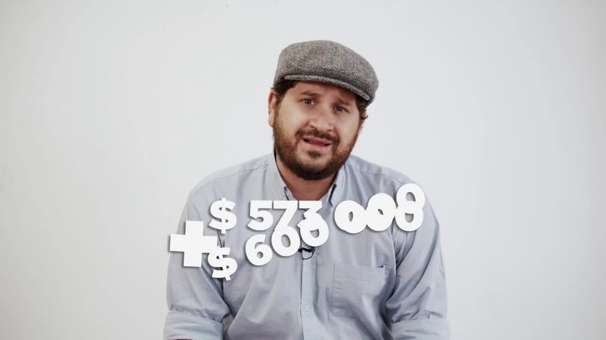
Installment 2 · Quito Metro and Ruta Viva
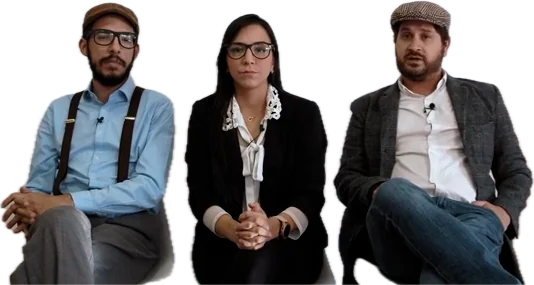
Odebrecht had a department for paying bribes and a computer system to keep the books. It was called Drousys. A source left a copy on an external drive, under a Bible, on the nightstand of a hotel room in Quito. Fifty journalists from ten countries worked on it for four months. In Ecuador, it showed that the construction company had lied to the courts.

The story of how the files arrived was also told. In January 2019 Boscán wrote to reporter Sasha Chavkin of the International Consortium of Investigative Journalists, and the ICIJ later published a behind-the-scenes piece with his account. Peru's El Comercio reconstructed the handoff: a hotel in Quito, the documents under a Bible. More than 50 journalists from 10 countries in Latin America and the United States worked through the 13,000 documents. The Mil Hojas website obtained the same information separately, as La Posta acknowledged in its opening video.
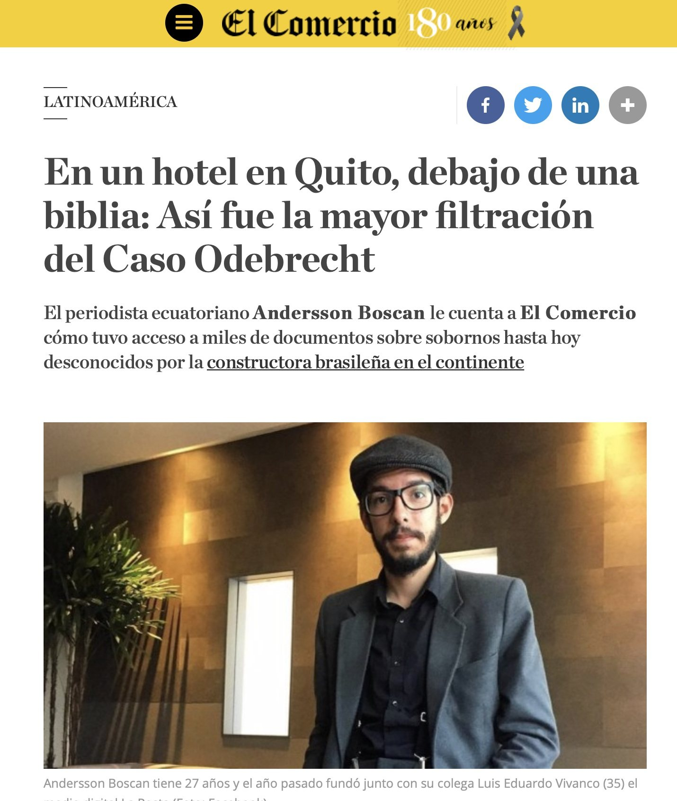
Odebrecht did not pay bribes casually. It had an office for that, the Structured Operations Division, and an encrypted computer system to keep the books on its dirty payments: Drousys. When the Lava Jato scandal caught up with it, the company signed an agreement with the U.S. Department of Justice in December 2016, confessing to 788 million dollars in bribes in twelve countries. For Ecuador it admitted 33.5 million for five projects between 2007 and 2016. In exchange for that cooperation, its executives received judicial benefits. Of the 77 executives who turned informant in various justice systems, none mentioned the Quito Metro; neither did José Conceição Santos, whose testimony sent Vice President Glas to prison.
A source told Andersson Boscán, then 27 and the recent co-founder of La Posta with Luis Eduardo Vivanco, that the confession was incomplete. It took him six months to persuade the source to hand over what they had. The handoff took place in a hotel room in Quito: an external drive under a Bible, on the nightstand. Inside were 33,000 Drousys files. The material overwhelmed them. In January 2019 Boscán emailed Sasha Chavkin of the International Consortium of Investigative Journalists with a two-word subject line: Important investigation.
The company intentionally concealed information from the Ecuadorian and international justice systems in its cooperation agreement, and this is very serious.
Andersson Boscán, June 26, 2019
The ICIJ sent Chavkin to Quito to verify and copy the files. Once cleaned up, more than 13,000 valid documents remained: spreadsheets, account statements, emails and transaction records between operators with code names such as Bambi, Stalin or Robocop. The Consortium assembled a team of more than 50 journalists from 10 countries and 18 media outlets. In Ecuador, La Posta worked with El Universo, and Mónica Velásquez was part of the team: it was her first collaboration with the ICIJ. Publication was simultaneous on June 25, 2019, at 11 p.m. Eastern time.
For Ecuador the finding was straightforward. The bribes added up to 51 million, not 33.5, and covered seven projects, not five: the Refinería del Pacífico, Daule Vinces, the Pascuales Cuenca pipeline, the La Esperanza aqueduct, the Manduriacu dam, and two more that had never been part of any investigation or had come out of them clean: the Quito Metro and the Ruta Viva. Odebrecht had denied paying bribes on those two projects. Drousys usage logs show that in mid-2016 someone deleted everything related to them, before the company sat down to cooperate with the courts. According to the criminal lawyers La Posta consulted, that deletion put at risk the executives' benefits and even Odebrecht's agreement with the U.S. justice system.

The Quito Metro was the largest project Odebrecht won in the country. Mayor Augusto Barrera announced the project, commissioned the studies in September 2010, created the public company in 2012 and said in 2013 that it would cost 1.492 billion. Drousys shows that the construction company had been planning the bribe since 2013, two years before the payment: in November of that year it signed a subcontract with a Spanish company to prepare the money trail. The Acciona Odebrecht consortium won the tender under Mayor Mauricio Rodas, who signed the contract on November 26, 2015, for 2.009 billion, when Lava Jato had already broken: the rules required the contract to go to the cheapest bid, and the cheapest was Odebrecht. That was 517 million more than the studies. Drousys records payments of five million dollars: three for the bid and two as a success fee. That is one percent of those 517 million, the company's usual percentage. An email exchange from July 2015 between the company's finance officer and his assistant, using aliases, pins down the account: the money came from Fortress Investor Limited at Meinl Bank in Austria, a bank Odebrecht controlled. The final beneficiary is not recorded.
The Ruta Viva, the highway connecting Quito with the valleys and the airport, had not even been under scrutiny. The Bribery Division's spreadsheets record, in October 2012, a payment of 915,250 dollars linked to a contract between an Odebrecht company in the Cayman Islands and Brazil's Tucson Engenharia, a partner under investigation in Brazil, and in 2013 another 573,000 and 600,000 disguised in a subcontract. More than two million in all. Barrera distanced himself in an interview: the call for bids and the tender documents were prepared with CAF, he said, the settlements for both phases took place under the Rodas administration, and he never in his life had anything to do with those people. On the Metro, Rodas replied in writing from abroad that the process began under the previous administration and that the consortiums were prequalified in 2013; Barrera answered that Odebrecht lost phase 1, that he suspended phase 2 without opening the bids, and that the project was contracted 500 million above the studies. Odebrecht, Acciona and former Public Works manager Germánico Pinto did not respond. Prosecutor Thania Moreno, who was handling the preliminary inquiry into the Metro, asked for it to be shelved hours before SUMA, Rodas's party, delivered to Lenín Moreno's government the votes to elect María Alejandra Vicuña as vice president, in January 2018; the closure was made official on February 27, according to the press. Asked about it, she said she needed authorization from her superiors to explain why.
| Date | Project or beneficiary | Amount | Money trail | Record |
|---|---|---|---|---|
| 2012-10 | Ruta Viva, phase 1 | $ 915.250 | Odebrecht (Cayman Islands) → Tucson Engenharia, Brazilian partner under investigation in Brazil, invoice 010 | Bribery Division spreadsheets |
| 2013 | Ruta Viva, phase 2 | $ 1,2 M | Tucson → subcontract with GT, 573,000 + 600,000 | Ruta Viva total: more than 2 million |
| 2013-08-21 | Pedro Merizalde | $ 150.000 | Field Services Ltd (Meinl Bank, Antigua) → Yorkfield Investment Inc (Royal Bank of Canada) | First of six transfers |
| 2013-11 | Pedro Merizalde | $ 170.000 | 100,000 by the same route Field Services → Yorkfield (Odebrecht records its return two days later) + 30,000, 50,000, 50,000 and 40,000 from Columbia Management | Net total received in 2013: 320,000 dollars |
| 2014-10-23 | Pascuales Cuenca pipeline | $ 1,6 M | Odebrecht → Ecuatoriano Suiza (premium) → Ocean Re (99.99%) → Nashville Financial Corp → Credicorp Bank | Excess policy, invoice 002003-4337. Repeated six times |
| 2015 | Quito Metro | $ 5 M | Fortress Investor Ltd (Meinl Bank, Austria) → unidentified beneficiary | 3 million for the bid, 2 million as a success fee. 1% of the 517 million cost overrun |
| 2016 | Deletion | — | Drousys usage logs | In mid-2016 everything related to the Metro and Ruta Viva was deleted before the cooperation with the courts |
The second installment described a mechanism no one had reported, which Odebrecht called "funding": how it moved bribe money into the banking system using insurance. On October 23, 2014, the insurer Ecuatoriano Suiza, one of the country's fifteen largest and owned by José Suárez, billed Odebrecht for an excess policy covering the Pascuales Cuenca pipeline for 300 million dollars, valid from 2014 to 2016 and signed by all three parties. More than half a dozen insurance industry experts reviewed it for La Posta. The premium: 1.619 million. Because no Ecuadorian insurer can cover that amount, the risk is ceded to international reinsurers. Normally it is spread among several. Ecuatoriano Suiza ceded almost all of it, 99.99 percent, to a single reinsurer: Ocean Re, a Panamanian company with less than four million in capital, authorized in Ecuador in 2014 and not authorized afterward.
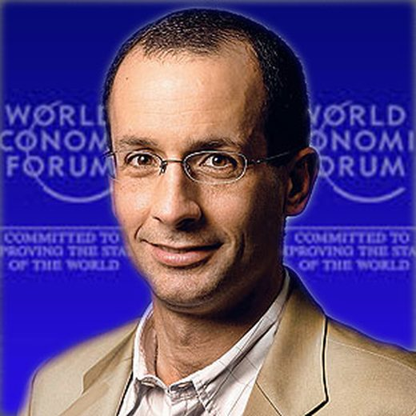
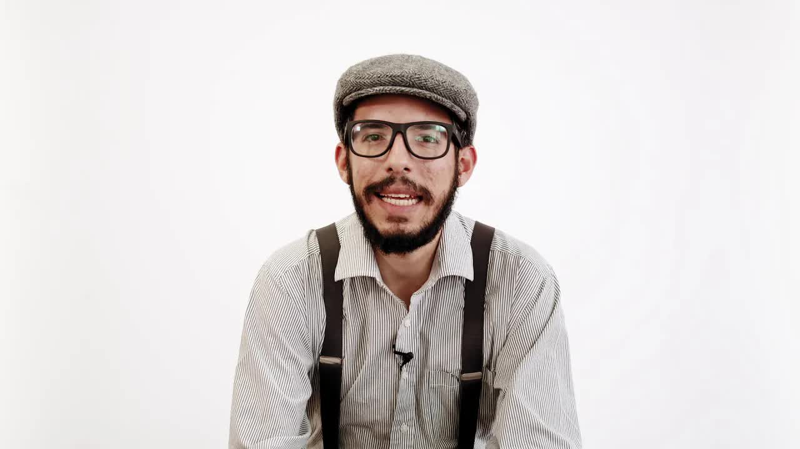
The operation was repeated at least six times, according to documents provided by Ecuatoriano Suiza.
Ocean Re in turn ceded the risk again, once more 99.99 percent, to Nashville Financial Corp, a Panamanian firm that is not registered in Ecuador and is not part of the insurance market. It was a front company of Odebrecht's own. The construction company ended up insuring itself and, in the process, moving a million and a half dollars with legal and banking cover to Nashville, which fed the swarm of offshore companies used to pay the bribes. The Credicorp Bank transfers show it. That is the same amount Drousys records as bribes for the pipeline that year. The operation was repeated at least six times. If a project fell through, documents called releases freed the insurer from paying. The six insured projects included Daule Vinces. Ecuatoriano Suiza's lawyer did not rule out that his client had acted illegally: the policies were issued in bulk, at Odebrecht's request, with the reinsurer the construction company brought along. The company's insurance broker distanced itself.
The third installment returned to a familiar name. Pedro Merizalde, head of Petroecuador and a minister under Rafael Correa, had appeared in the 2016 Panama Papers as the owner of the offshore company Yorkfield Investment. He admitted then that he had failed to declare a company that, he said, never operated; Correa defended him: he hasn't made a deal for twenty cents. Drousys shows 320,000 dollars that went straight into Yorkfield's account at the Royal Bank of Canada during 2013 from Field Services Limited, at Meinl Bank in Antigua, and from Columbia Management, another company in the scheme. In 2013 Merizalde was head of Petroecuador and an authorized signatory for the Refinería del Pacífico, one of the seven projects with bribes. The courts could have discovered it in 2016, had Galo Chiriboga's Attorney General's Office traced the account. Merizalde was a fugitive when the story was published.
The effect was swift and short-lived. On July 4, 2019, the Attorney General's Office asked the Provincial Court of Pichincha to reopen the Quito Metro case. On July 11, the attorney general, Solicitor General Íñigo Salvador, the comptroller and anti-corruption secretary Iván Granda sat down for the first time with Odebrecht's new leadership to discuss full reparations; the second meeting was with the Water Secretariat. The Quito municipality, the only direct contracting party for the Metro and the Ruta Viva, asked to join the talks; the Metro's general manager, Jorge Yáñez, resigned. In August the company's representative, Félix Martins, gave his first interview in Ecuador, on Café La Posta: he apologized to Ecuadorians, said that all of Drousys was in the hands of the Brazilian and U.S. justice systems, and that the company had imposed on itself a moral restriction against bidding. Boscán reminded him that neither the company nor a single executive had been prosecuted in Ecuador, not even for criminal association, two years after the Attorney General's Office began negotiating with it in May 2017. The company left the Metro consortium. The project was completed and the train has been running since December 2023.
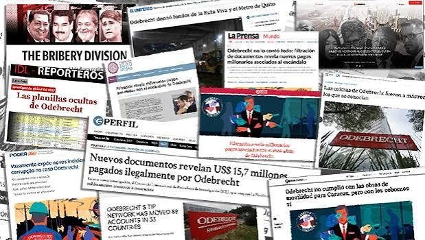
Then came the usual silence. No one is talking about the Ruta Viva, La Posta said in July 2019, and so it remained. There is no verdict on the Metro or the Ruta Viva. No one has identified the beneficiary of the five million from Meinl Bank. The Superintendency of Companies never reported an audit of Ecuatoriano Suiza's policies. Ocean Re was investigated in Peru, not in Ecuador. Neither Odebrecht nor its executives were prosecuted in the country.
What did reach a conclusion was the Sobornos (Bribes) case, which grew out of a different leak: Pamela Martínez's green file, published by Fernando Villavicencio and Christian Zurita as Arroz Verde. On February 26, 2020, expert witness Alexandra Mantilla described the organization as a criminal structure led by Rafael Correa, with Glas, Alexis Mera and María de los Ángeles Duarte as coordinators. On April 7, 2020, a court sentenced Correa, Glas, Mera, Duarte, Vinicio Alvarado, Walter Solís and about ten businesspeople to eight years and ordered them to repay 14.7 million, along with a ban on running for office, public apologies and an ethics course. On September 7, 2020, the cassation court upheld the ruling. Correa lives in Belgium; Alvarado in Venezuela; Solís in the United States; Duarte at the Argentine embassy and later in Argentina. Ricardo Rivera, Glas's uncle who collected the bribes, died on January 15, 2022, of COVID complications; the Solicitor General's Office asked for a ban on selling his assets. In February 2022 La Posta checked the accounts: none of them had paid a cent, and Glas, having served 52 percent of his sentence, was denied release by a judge.
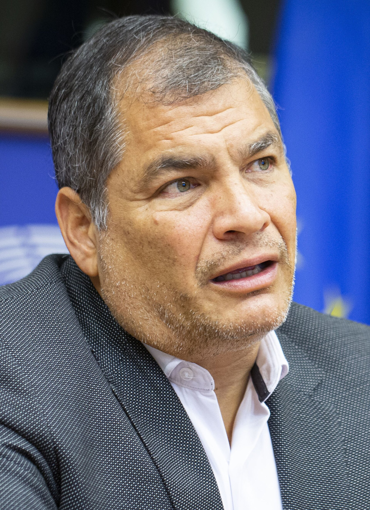
Updated September 5, 2026
Rodas signs with Acciona Odebrecht for 2.009 billion, 517 million more than the studies.
Drousys records the deletion of everything related to the Metro and Ruta Viva.
Drousys records a subcontract with a Spanish company to prepare the Metro payment, two years in advance.
Odebrecht admits to 788 million in bribes in 12 countries; 33.5 million in Ecuador.
The Attorney General's Office raids the Metro de Quito company. It finds nothing.
Prosecutor Thania Moreno asks to shelve the Metro case hours before the vote that made Vicuña vice president.
The Metro inquiry is shelved, according to the press.
Six months of effort leading up to the drive under the Bible.
Boscán writes to the ICIJ. Chavkin travels to Quito.
Bribery Division is published simultaneously in 18 outlets in 10 countries.
Metro and Ruta Viva; the insurance route; Merizalde's offshore company.
The Attorney General's Office asks to reopen the Quito Metro case.
First meeting of the Attorney General's Office, Solicitor General's Office, Comptroller General's Office and Anti-Corruption Secretariat with Odebrecht.
Correa, Glas and others sentenced to eight years. It is a different leak, a different case; expert witness Mantilla called them a criminal structure on February 26.
None of those convicted has repaid any money.
No verdict. The beneficiary of the five million remains unnamed.
Received the leak and shared it with the ICIJ. Led the Ecuadorian team.
Part of the La Posta team that worked on the documents with the Consortium.
Co-founder of La Posta. The first person Boscán called after receiving the files.
ICIJ reporter who traveled to Quito for the files.
Former minister under Rafael Correa with an offshore company uncovered in 2016.
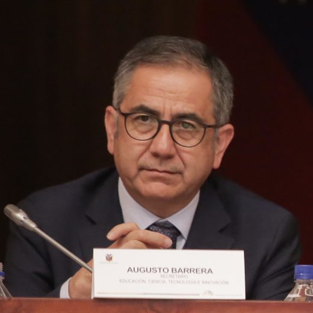
Mayor of Quito 2009-2014. Commissioned the Metro studies and called for bids on the Ruta Viva.
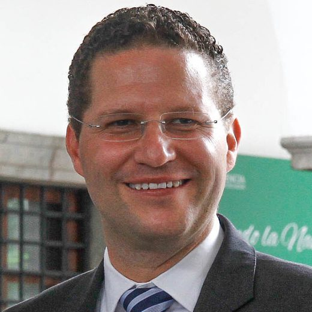
Mayor of Quito 2014-2019. Signed the Metro contract in 2015.
Prosecutor who handled the Metro inquiry and asked for it to be shelved.
Owner of Ecuatoriano Suiza, the insurer in the insurance route.
Odebrecht's representative for several countries. First interview in Ecuador, on La Posta.
Photos via Wikimedia Commons. Augusto Barrera: Asamblea Nacional del Ecuador from Quito, Ecuador (CC BY-SA 2.0); Mauricio Rodas: Medios Públicos EP (CC BY-SA 2.0).
"La Posta reporter Andersson Boscán shared more than 13,000 files relating to Odebrecht with ICIJ," the Consortium said when it presented the investigation.
Had described the Odebrecht case as "the largest foreign bribery case in history."
Odebrecht lost phase 1 of the Metro; he suspended phase 2 without opening the bids, under the oversight of the World Bank, the IDB and the EIB; the project was contracted 500 million above the studies. On the Ruta Viva: 'never in my life have I had anything to do with these people.'
In writing, from abroad: the Metro process began under the previous administration; in 2013 the plans of seven consortiums were reviewed and four were prequalified.
Its lawyer did not rule out illegal conduct: the policies were issued in bulk, at Odebrecht's request, with the reinsurer the construction company brought along; it was a business decision.
Apologized to Ecuadorians; said that all of Drousys is in the hands of the Brazilian and U.S. justice systems, that six executives cooperated in Ecuador and that the company does not take part in tenders because of a moral restriction.
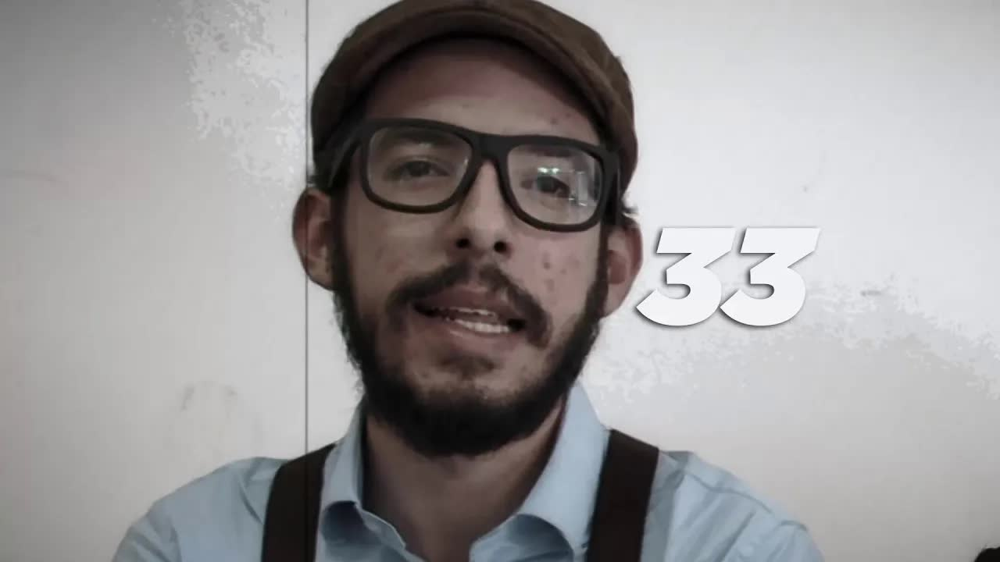
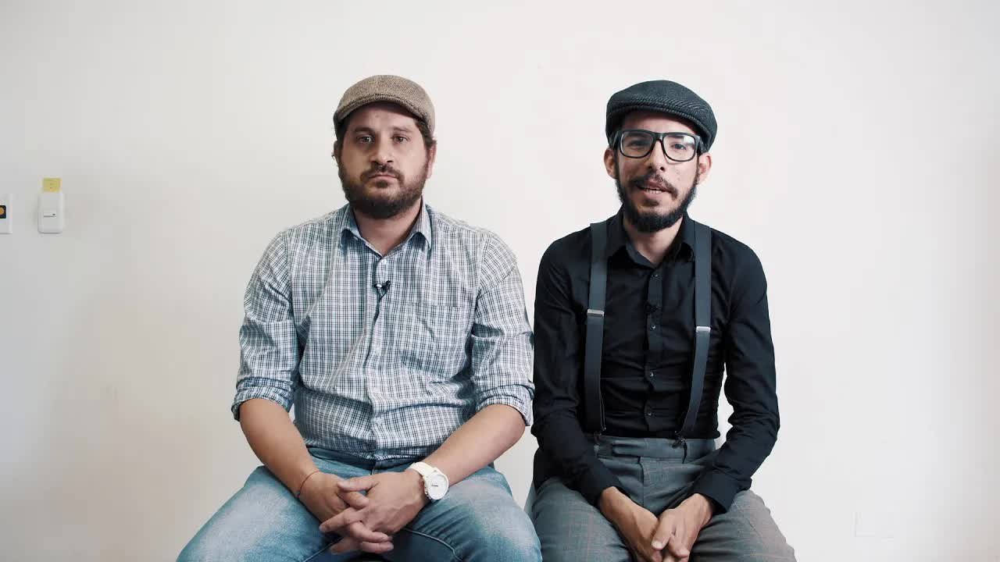
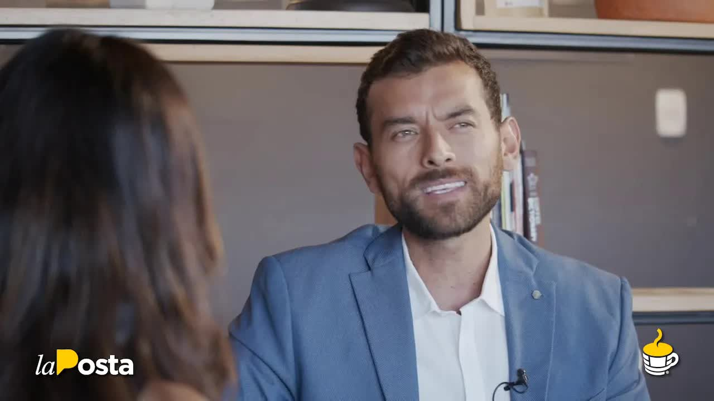
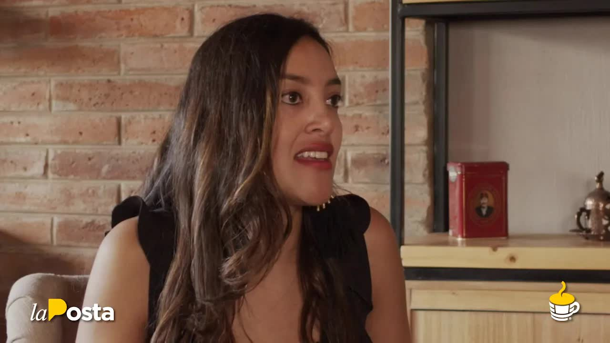
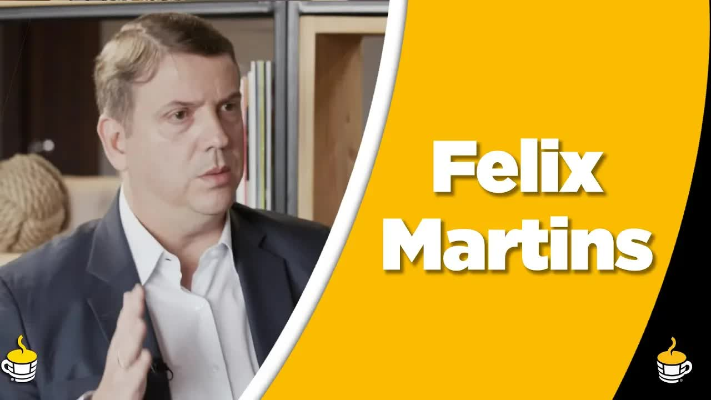
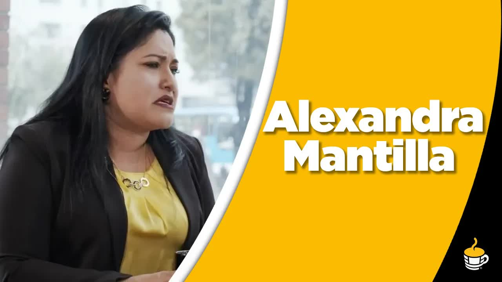
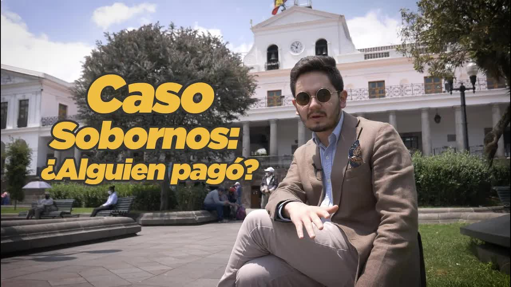
odebrecht was a meticulous company it stole and took care in a very tidy way yes professionals even in the take because if you're going to create a bribery network reaching the top authorities on the continent you have to do it right the bet accessed droid sis the computer system that 'break' created to keep its record of dirty payments its corrupt accounting this is the bribery division la posta accessed…
Read the full transcriptthe scandal of odebrecht's wave of corruption left almost no projects intact in its path one ecuador the quito metro and the ruta viva survived the tsunami and slipped under the radar the justice system considered them clean projects with no findings of corruption until today some 13,000 documents from odebrecht's bribery system obtained by la poste and shared with the international consortium of investigative journalists show…
Read the full transcripthave you ever wondered how odebrecht managed to get out the bribe money it paid to the corrupt officials who favored it with inflated contracts how is it that nobody noticed how could they even put that money through the banks odebrecht's secret documents obtained by la apostó and shared with more than 50 journalists from 10 countries through the international consortium of investigative journalis…
Read the full transcriptremember pedro merizalde a petroecuador manager my year of rafa and of jorgito glass who is now a fugitive and on the rooftops there was a time when he was not part of instructor fugitives revolution times in 2016 the international consortium of sad investigation stained his revolutionary career when it published the panama papers and showed that elite expert breaks link that had an option merizal…
Read the full transcriptits doors every morning and lets us do the interviews and also gives us a delicious coffee also wants to be marta a group of lawyers who specialize in serving startups so if you want to open one contact them they can advise you legally now friends well we have the hot news well friends hot off the press the complaints continue against the new president of the…
Read the full transcriptescape alexis medel hasn't even gone a full week under house arrest with an ankle monitor and he's trying to escape fernando alvarado style we hope this doesn't happen again and that the justice system knows how to keep watch on him so he doesn't escape like other correísta fugitives from justice on the other hand hot off the press yesterday the attorney general's office decided to open a preliminary inquiry into four against four citizen participation council members and among …
Read the full transcriptwe were listening to iván grandes anti-corruption secretar offer a reward for for seeing who knows the whereabouts of rafael correa I don't know if the issue is whether they still have the address in belgium so you can earn yourself a little bill chema saying where rafa is but the government is still trying to keep up the anti-corruption fight as a flagship fight every day it's harder for it it's harder for it above all because of the name of a …
Read the full transcriptalso the division of money which is even where I start to see the appearance of codes codes that catch my attention at that moment I take the baccarat notebooks and what does this mean because she starts making the divisions and in these divisions she starts putting codes there you start to see the first line that we have a modus operandi why because the modus operandi one of the objectives of the gr world…
Read the full transcriptthis is the plaque that reminds us that correísmo robbed us by collecting bribes and overcharges from the brazilian construction company odebrecht one of the most important faces of this corrupt web lost his life last month and with him the stolen money too today I'm here to tell you what has happened with those convicted in the sobornos case and whether they've paid at least one cent on september 7, 2020 the judge of the cassation court…
Read the full transcriptTranscripts from each show's automatic captions. They have not been corrected by hand: use them to find a phrase and jump to the exact minute in the video, not as verbatim quotes.
The Attorney General's Office reopened the case shelved in 2018. Seven years later it has not gone to trial.
Those convicted in the Sobornos case owe 14.7 million. They have not paid.
La Posta's videos are hosted here. The Consortium's full investigation is at icij.org/briberydivision.